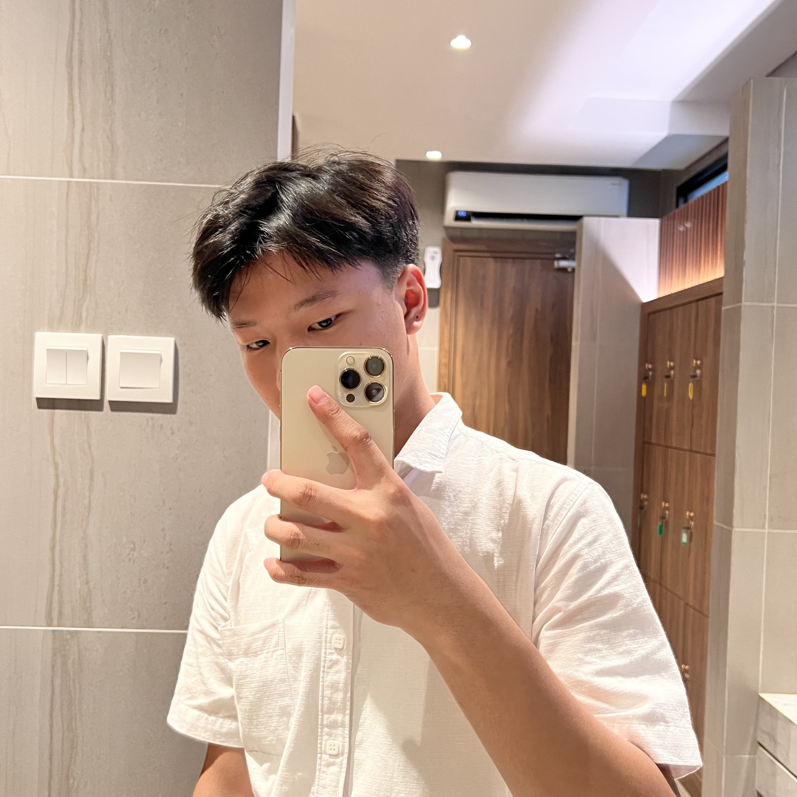
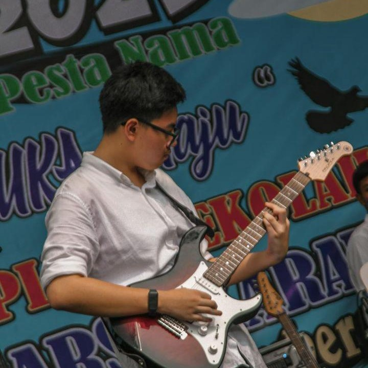
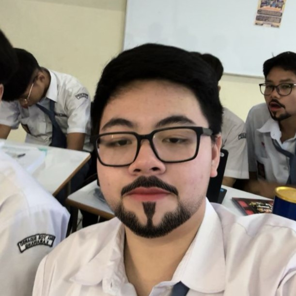
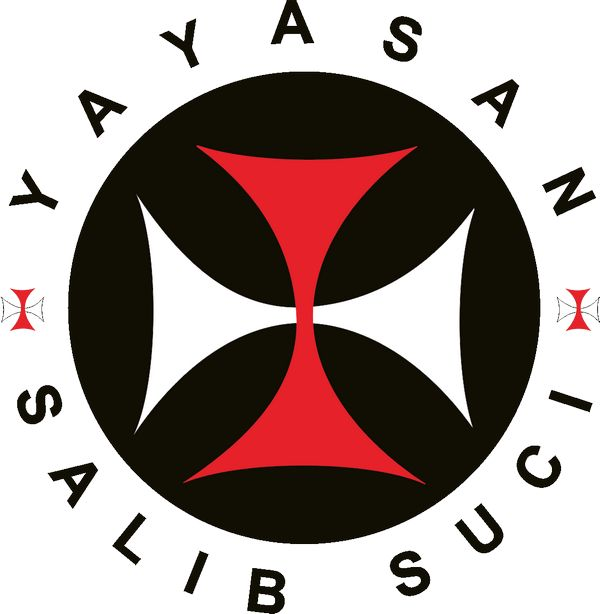
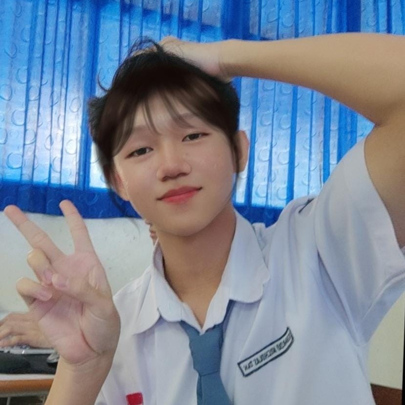

Les Bareng Progamming #dirumahgacoraja
Belajar Progamming lebih mudah di Rumah Gacor
Pengenalan
Anggota Kelompok
1. Aldo Hu (3)
2. Evandra Jerolin (9)
3. Jonathan Alexander (15)
4. Renardo Nicholas Tan (21)
Web ini dibuat untuk menyelesaikan tugas proyek Informatika kelas 11.2 yang dibimbing oleh Pak Fero Pardede S.Pd. Kami dari kelompok 7 mengerjakan tugas ini dengan sepenuh hati sehingga dapat menghasilkan kepuasan terhadap guru yang membimbing serta kepada kelompok kami sendiri.
Foto Anggota Kelompok
Ini adalah foto dari anggota kelompok 7.

Aldo Hu

Evandra Jerolin

Jonathan Alexander
Renardo Nickolas Tan
Gallery
berikut adalah dokumentasi kelompok kami


